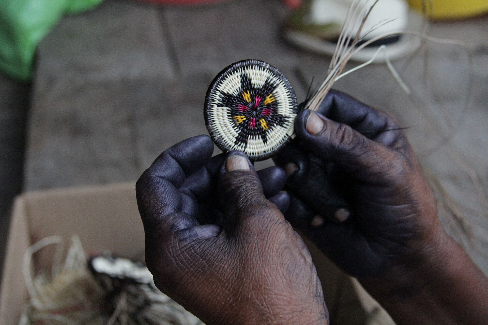
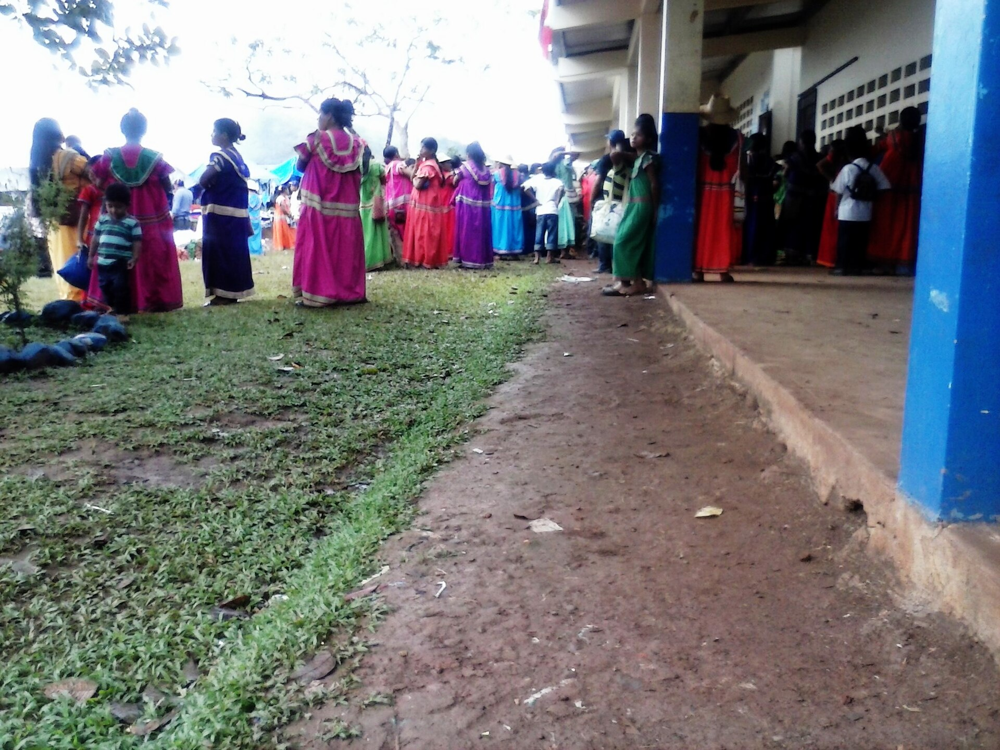

Juventud rural de Panamá
La Red Nacional de Juventudes Rurales reúne a más de 350 jóvenes del campo en las 10 provincias y las 4 comarcas del país.
Arreo de ganado · Cambutal, Los Santos
Quiénes somos
- Alcance Nacional, 14 territorios
- Reconocimiento Ministerio de Desarrollo Agropecuario (MIDA)
- Carácter Independiente, sin fines de lucro

RENAJUR reúne a jóvenes del sector rural y agropecuario de todo el país para visibilizar, fortalecer y promover su liderazgo en el campo panameño.Somos una organización independiente y de alcance nacional que impulsa oportunidades de desarrollo para el campo. Tenemos personería jurídica propia, otorgada bajo el marco de reconocimiento del MIDA. Somos independientes: no somos una dependencia del Ministerio.
Una sola red
de costa a costa
- 350+
- jóvenes rurales en la base de la red
- 10
- provincias con presencia, de Bocas del Toro a Darién
- 4
- comarcas: Guna Yala, Emberá-Wounaan, Ngäbe-Buglé y Naso Tjër Di
- 9
- áreas de trabajo, del cultivo a la conservación
Del surco al mercado
-
Agricultura y agroindustria
Café, granos, raíces y frutales. Acompañamos a jóvenes que siembran y a los que transforman la cosecha en producto con valor agregado.
-
Ganadería, porcicultura y avicultura
Producción pecuaria con buenas prácticas, relevo generacional en las fincas y formación técnica para quienes trabajan con animales.
-
Emprendimientos rurales
Ideas de negocio nacidas en el campo: artesanía, alimentos, servicios. Conectamos a los jóvenes con capacitación, ferias y aliados.
-
Turismo rural
Las comunidades como destino: fincas, ríos, islas y tradiciones que los propios jóvenes muestran y cuidan.
-
Sostenibilidad y conservación
Agua, suelo y bosque. Producir hoy sin quitarle el campo a quienes vienen después.
Dónde estamos
10 provincias y 4 comarcas. Toca la tuya para sumarte desde ahí.
Renovando la red
Nuestra personería jurídica anterior venció y estamos en un proceso de renovación organizativa: conformamos una nueva Junta Directiva Nacional y actualizamos nuestra documentación.
Mientras tanto seguimos trabajando: articulamos con aliados, coordinamos con las bases y participamos en iniciativas de desarrollo rural.
Junta Directiva Nacional
Conduce la red y la representa ante instituciones y aliados. En conformación.
Coordinaciones territoriales
Una por provincia y comarca, cerca de las comunidades.
Grupos de base
Los jóvenes en sus fincas, cooperativas y emprendimientos.
Queremos trabajar con
- jóvenes del campo
- productores
- cooperativas
- gobiernos locales
- instituciones del Estado
- universidades
- empresas del agro
- fundaciones
- organismos internacionales
¿Te sumas
Estoy en mi provincia o comarca y me interesa:
Se abre tu correo con el mensaje ya escrito. Te responde la coordinación de tu territorio.
Escríbenos si eres joven rural, si tienes un proyecto para el campo o si tu institución quiere colaborar con nosotros.
